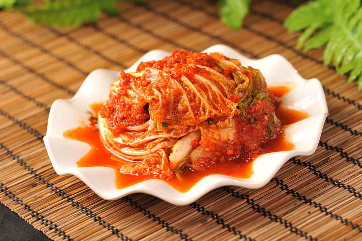

Adam's Magical Lasagna

Description
BAM! Ladies and gentlemen, gather 'round because we're about to embark on
a culinary adventure like no other! I present to you, Adam's Magical
Lasagna! This dish is a symphony of flavors that'll make your taste buds
do the mambo like they're on the streets of Napoli!
Picture this: layers upon layers of velvety, homemade pasta sheets,
lovingly nestled between rich, savory sauces that have been simmering to
perfection for hours. But here's the twist, my friends – this lasagna
isn't just ordinary. It's enchanted! Each bite is like a magical journey
through Italy itself.
First, you'll be enchanted by the silky béchamel sauce, a creamy dream
that's smoother than a Venetian gondola ride. Then, the marinara sauce,
bursting with the ripest tomatoes, fresh basil, and garlic, will transport
you straight to the sunny Amalfi coast. And the cheeses! Oh, the cheeses!
Mozzarella, Parmesan, and ricotta dance together like a Neapolitan trio,
creating a harmonious melody of flavors that'll have you singing "That's
amore!"
But what's truly magical about Adam's masterpiece is the secret
ingredient, passed down through generations: a sprinkle of love. That's
right, folks, it's made with so much amore that you'll swear there's a
little Italian grandma in the kitchen, whispering culinary secrets from
the old country.
So, when you take that first forkful of Adam's Magical Lasagna, be
prepared to have your senses dazzled and your taste buds spellbound. It's
not just a meal; it's an enchanting culinary experience that'll leave you
saying, "BAM! That's the most magical lasagna I've ever tasted!"
Ingredients
Meat Sauce
- 1 pound(450g) ground beed or ground italian sausage
- 1 onion, chopped
- 2 cloves garlic, minced
- 1 can (28 ounces) of crushed tomatoes
- 1 can (6 ounces) of tomato paste
- 1 teaspoon sugar
- 1 teaspoon dried basil leaves
- Salt and pepper to taste
Cheese Layer
- 2 cups (16 ounces) of ricotta cheese
- 1 egg, beaten
- 3 cups (12 ounces) shredded mozzarella cheese
- 1/2 cup (2 ounces) grated Parmesan cheese
Additional Layers
-
9 cooked lasagna noodles (boiled according to package instructions)
- 2 cups (16 ounces) of marinara sauce (store-bought or homemade)
Steps
-
Prepare the Meat Sauce:In a large skillet, brown the ground beef or
Italian sausage over medium heat. Drain any excess fat.Add the chopped
onion and minced garlic to the skillet and sauté until the onions are
translucent. Stir in the crushed tomatoes, tomato paste, sugar, dried
basil, salt, and pepper. Simmer for about 10-15 minutes, stirring
occasionally. Set aside.
-
Prepare the Cheese Layer: In a mixing bowl, combine the ricotta cheese
and beaten egg. Mix until well blended.
-
Assemble the Lasagna: Preheat your oven to 375°F (190°C). In a 9x13-inch
baking dish, spread a small amount of marinara sauce on the bottom to
prevent sticking. Place three cooked lasagna noodles on top of the
sauce. Spread half of the ricotta cheese mixture over the noodles.
Sprinkle 1 cup of shredded mozzarella cheese over the ricotta layer.
Spoon half of the meat sauce evenly over the mozzarella layer.
-
Repeat the Layers: Add another layer of three lasagna noodles. Spread
the remaining ricotta cheese mixture. Sprinkle 1 cup of shredded
mozzarella cheese. Spoon the rest of the meat sauce.
-
Final Layer: Place the final three lasagna noodles on top. Spread the
remaining marinara sauce over the noodles. Sprinkle the remaining 1 cup
of shredded mozzarella cheese. Top with grated Parmesan cheese.
-
Bake: Cover the baking dish with aluminum foil to prevent excessive
browning and bake in the preheated oven for 25-30 minutes.
-
Serve: Remove the foil and bake for an additional 10-15 minutes, or
until the cheese is bubbly and golden. Allow the lasagna to cool for a
few minutes before slicing and serving.